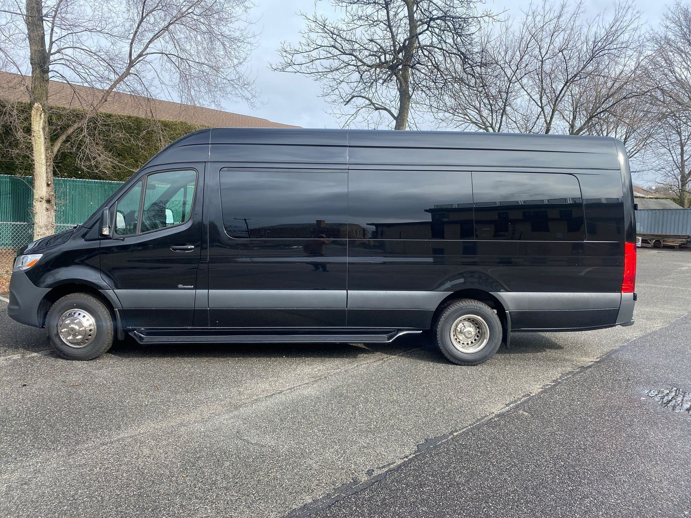

Photography-led
Large, clean vehicle imagery is the hero of every layout. Chrome and copy support the photo, never compete with it.
Imagery first
GM Motors NY
The single source of truth for color, type, and components across the GM Motors NY site — homepage, inventory (SRP), and vehicle detail (VDP). Everything on this page is rendered with the live site CSS — home-blue, srp, card-cta, topsearch, vdp. Nothing here is a mock-up: if a component drifts from the site, it drifts here too.
Overview
Four rules keep every page reading as one premium van dealership.
Large, clean vehicle imagery is the hero of every layout. Chrome and copy support the photo, never compete with it.
Imagery first
Premium comes from whitespace, hierarchy, and one confident accent — not gradients, badges, or noise.
Fewer, better elements
The same tokens and components compose the homepage, SRP, and VDP. Reusable, never bespoke per page.
One shared language
Clear CTAs (Browse · Trade · Finance), honest specs, visible focus states, and readable type build confidence.
Conversion by clarity
Foundations
A light, premium surface system with one blue accent for every action. Deep navy anchors dark bands. Zero secondary hues.
Surfaces & ink
Blue accent
One accent hue, zero blue-and-something. #0A6CE0 is primary, #033F84 (deep navy) is hover / text-on-light and the base of dark bands (Financing, Inspected, footer). Accent-light #4F9BFF is for icons, checks, and glows on dark. Accent-soft is chip/field-focus backgrounds only.
Foundations
Proportion is the premium signal. Keep light surfaces and whitespace dominant; let blue stay purposeful.
Page/section backgrounds, white cards, generous negative space.
Headlines, body, labels, metadata.
Primary CTAs, active nav, links, key emphasis. The only action color.
Financing band, Inspected block, footer — intentional beats, not every section.
Foundations
Two families. Sora for display, headings, prices, and eyebrows. Plus Jakarta Sans for everything you read, scan, and type.
Sora is a display face. Use it for headings, eyebrows, prices, and stat numbers. Keep body, meta, forms, and UI on Jakarta. Let hierarchy come from size and weight, not decoration.
Foundations
Space is the loudest premium signal. Big gaps between sections, calm gaps inside components. Sections use fluid clamp(4rem, 9vw, 8rem) vertical padding.
Foundations
Tight and serious — soft enough to feel considered, never bubbly SaaS. Pills only for buttons and chips.
Foundations
One set — Bootstrap Icons, single outline weight. Muted by default, accent only for action.
Default icon color is --ink-soft; use --accent only for actionable or active icons. One library, one weight — no mixing icon sets.
Components
Quiet fields on a soft-grey surface, with a blue focus ring. Errors pair color with a message — never color alone.
Components
The vehicle card (.v-card) is the workhorse across homepage, SRP, and related. Photo leads; specs and price stay calm. Status tags only when meaningful.
.v-card · media 4:3 · Sora title · tabular price · outline Finance + ink View Details · whole card links to VDP
Status tags
Components
The client's real logo: a blue rosette emblem with a white “GM”, plus a serif “Motors Inc.” wordmark. Three web assets, derived from the supplied vector. The emblem is self-contained — the white GM sits on the blue rosette, so it reads on any background. Only the wordmark ever needed a light variant.
| Surface | Variant |
|---|---|
| Inventory / VDP nav (always white) | logo-gm.svg — colour |
| Homepage nav over the dark hero | logo-gm-light.svg |
| Homepage nav once scrolled (white) | logo-gm.svg — swaps via .is-scrolled / .is-open |
| Every footer (dark) | logo-gm-light.svg |
| Favicon | logo-gm-mark.svg |
.brand__img is height-constrained with width:auto.width — it will distort.Components
Predictable nav, a visible phone CTA, and a quiet, complete footer. Interior pages use the solid white nav (.nav--solid).
Patterns
The full system in context: photography-led, dark scrim for legibility, blue action, stepped display type.
Vans that earn their keep
Quality pre-owned Sprinter, Transit & ProMaster vans, delivered to all 50 states.
Blue carries the primary action; the ghost-light button is the quiet pair. The photo is never fully covered — the scrim only fades one side for text.
Patterns
Full-width, three-up on desktop (two on tablet, one on mobile). Left sidebar filters, aligned card content, whole card links to the VDP.
Patterns
Big hero gallery + sticky info panel above the fold; all photos in a 4-up grid; grouped specs, highlights, and related vehicles keep users shopping.

SoldGallery: fullscreen icon + “View all N photos” · lightbox with prev/next
Components
Passenger vs Cargo is the first call a van buyer makes, so the SRP leads with it. The silhouettes are hand-drawn SVG: passenger has a row of side windows, cargo is a solid panel. That single difference is how real vans differ, and it reads instantly at 46px.
The glass is painted fill="var(--van-bg)", not white. --van-bg tracks each tile's own background — --surface normally, --accent when selected. That is why the windows read as cut-outs on the white tile and the blue one. Recolour a tile and you must update --van-bg, or the windows vanish.
Patterns
The VDP reads as an editorial sequence, not a stack of divs. Each section opens with an accent number + display title, and alternates surface: white → grey band → white → navy band. That rhythm is what stops it feeling generic.
| # | Section | Surface |
|---|---|---|
| 01 | About this van (Overview) | page |
| 02 | Specifications | grey band (--surface-2) |
| 03 | Video | page |
| 04 | History & condition | page |
| 05 | Financing & trade | navy band |
The numbers must match the sub-nav chip order 1:1. Add or reorder a section and you renumber both. Bands go full-bleed with margin-inline: calc(-1 * var(--gutter)) + the same padding back.
Foundations
Light surfaces go dead flat without help. Two layers fix that, and both are meant to be felt, not seen.
| Layer | What it is |
|---|---|
| Film grain | body::after — an feTurbulence noise tile at 6% opacity, mix-blend-mode: multiply, position: fixed + pointer-events: none. Fixed on purpose: it must never repaint while scrolling. |
| Ambience | Three radial washes on the VDP: a blue key light top-right, a navy fill left, a floor shadow at the bottom. The page gets a light source instead of a flat slab. |
| Material surfaces | White cards take a hairline top highlight (inset 0 1px 0 rgba(255,255,255,.9)) and a navy-tinted shadow — they sit in the light rather than pasted onto it. |
This page carries body.has-texture, so the grain you're looking at right now is the real thing. Don't strengthen the wash on the grey band — at full strength it washes the band out and the white Specs card loses its separation from it. That was tried, and reverted.
Quality
Direct, premium, calm, trustworthy. A work van is income on wheels — the fear is downtime, not price. If it reads like a cheap ad, rewrite it.
Quality
Run this before shipping any page.